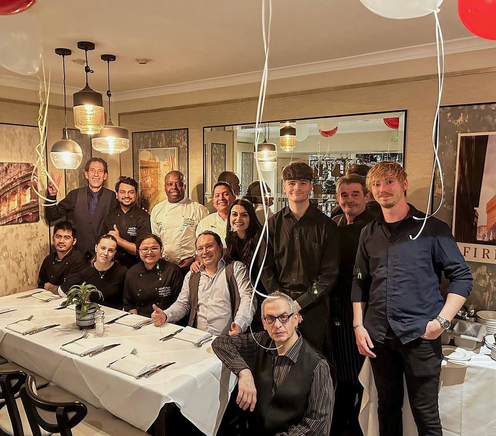
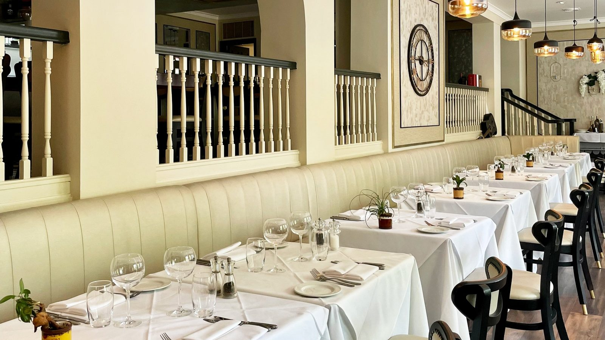

Restaurant of the Year — South East
The Food Awards England
La Storia
One family, one kitchen, and the same welcome for over three decades in the Surrey countryside.
Dal 1990-qualcosa
For over three decades, one family has kept La Meridiana exactly what it should be: a village trattoria with Surrey manners. The recipes come from home — sauces that simmer all morning, pasta rolled by hand, and pizzas people drive across the county for — and the welcome comes from here: warm, unhurried, and on first-name terms by your second visit.
We named the place after the meridian — the line the sun crosses at midday, when every proper Italian table is already set. Lunch is sacred here. So is dinner. So, frankly, is the bit in between with a glass of something red.

The Food Awards England
Muddy Stilettos Awards
Sicurezza · Food Safety
We hold the Food Standards Agency's highest food-hygiene rating — 5, “Very Good” — awarded at our most recent inspection on 4 July 2024. It's the standard we keep every service, and you're welcome to check it for yourself.
Very Good
Food Standards Agency · 4 July 2024
When the sun crosses the meridian, the table is already set.
Thirty years on, the best seat in the house is still the one with your name on it.